New look: four prototypes
Each one replaces the shared "default" style found in the Cartopia comparison. The game board and blocks are the real game; only the interface around it changes. Swipe each row.
1. Quarry: built from the blocks
Menus and buttons are made of the game's own stone, brick, wood and fire tiles, with pixel lettering.
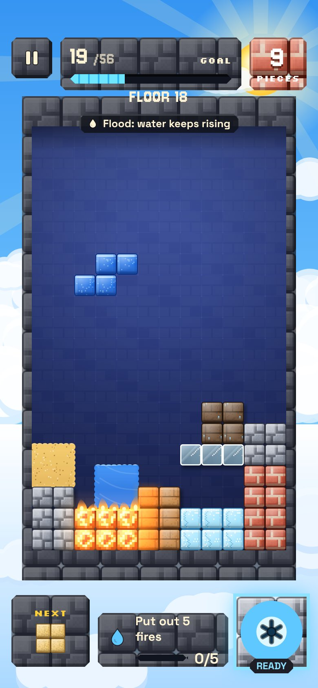
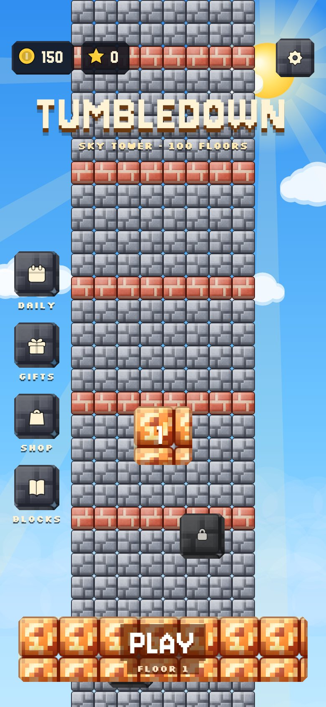
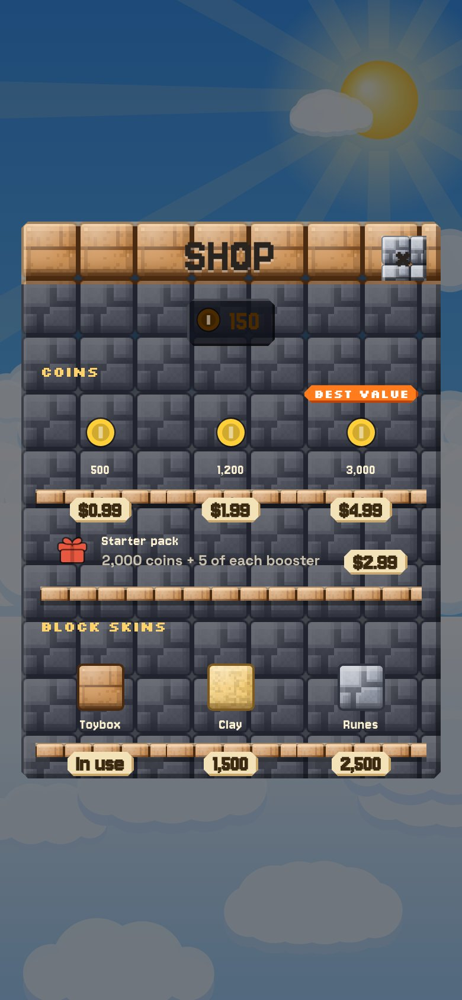
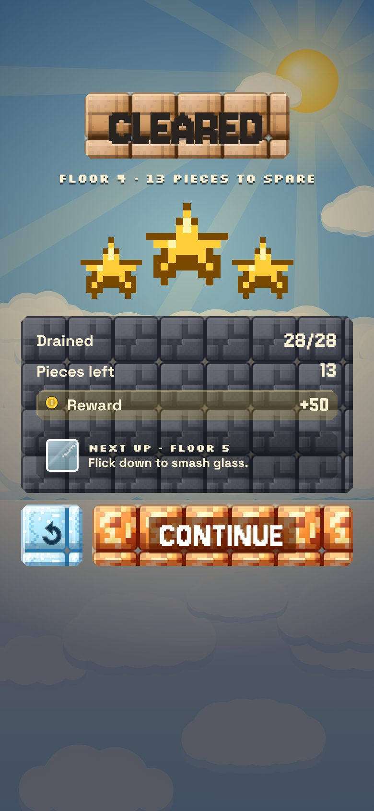
2. Pixel trim
Smooth dark slate with pixel corners and pixel labels. Cleaner and easier to read.
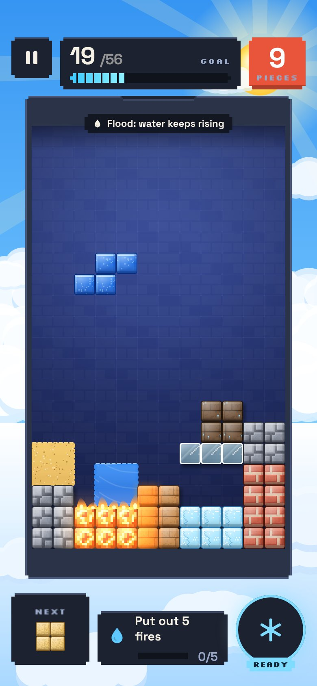
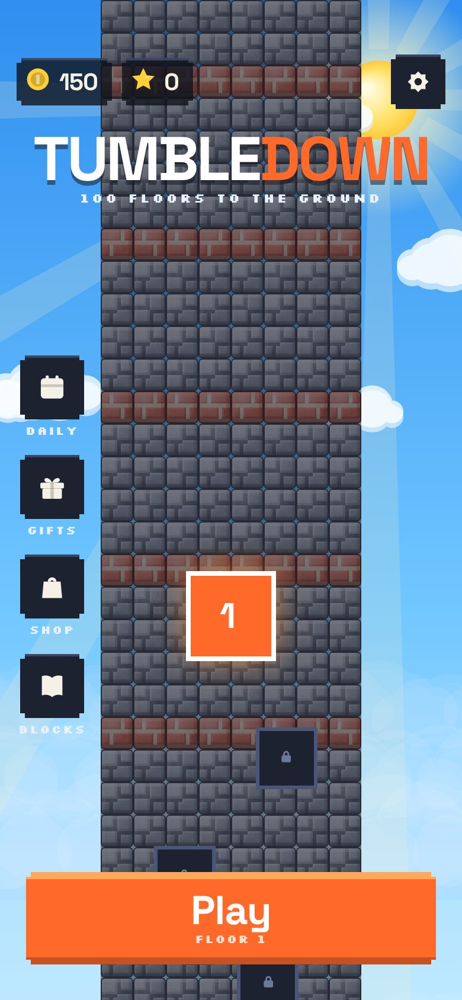
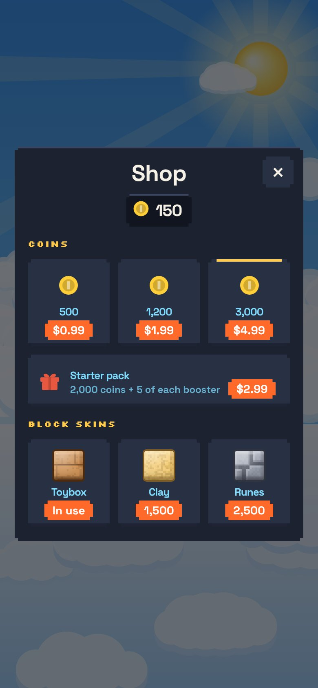
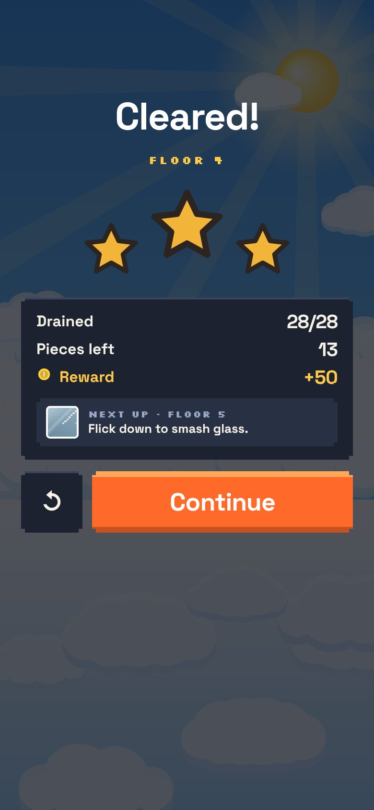
3. Dusk observatory
Frosted glass over a dusk sky, an elegant serif and gold lines. Calm and grown-up.
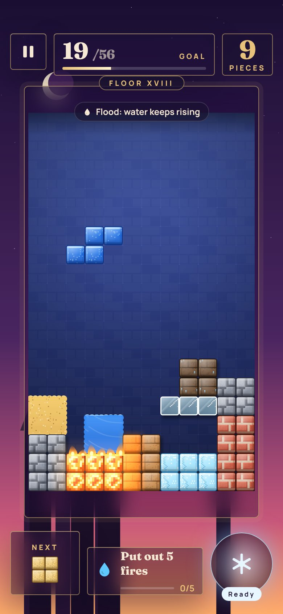
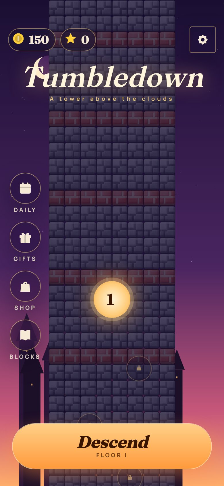
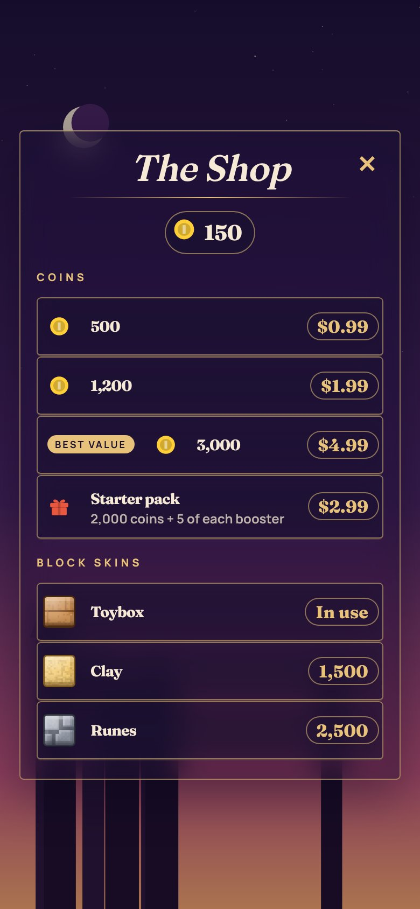
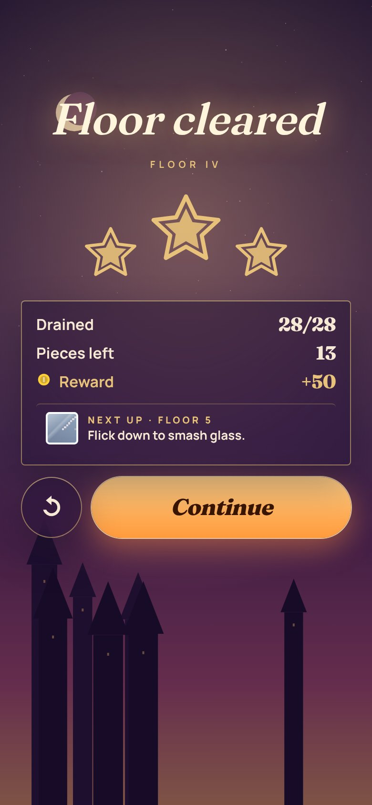
4. Storybook paper
Cut-paper cards, hand-inked edges and handwritten lettering. Warm and playful.
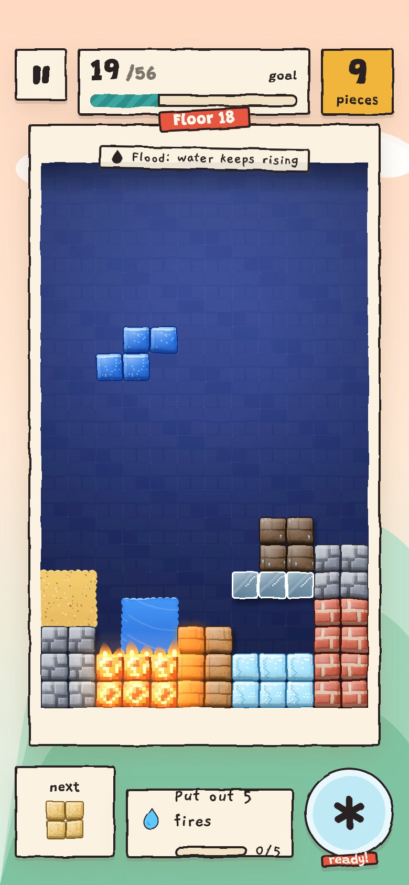
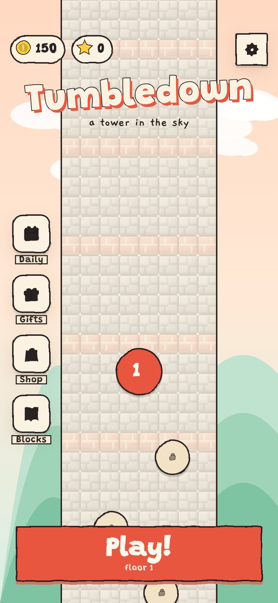
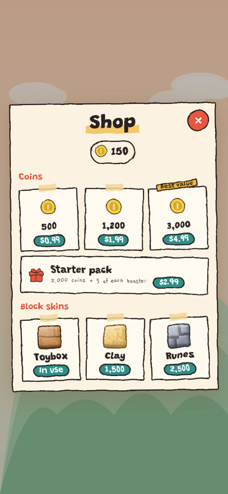
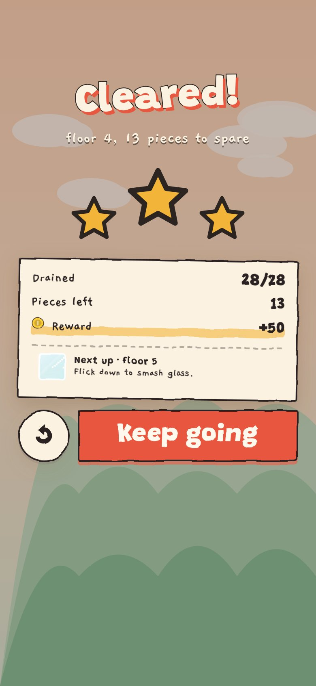
Prototypes are static screenshots. Live version: mockup.html?dir=quarry, trim, dusk or paper.